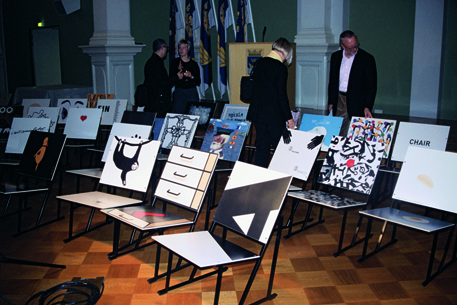

2004 : Beijing
×

The first AGI member from the Chinese mainland, Prof. Yu Bingnan, joined in 1992. Over the next 12 years, the world changed and China, in particular. In 2004 Beijing received a visit from AGI. In the meantime, a gale-force ‘breeze’ had blown China into the centre of global attention. Old Beijing has been flattened by an armada of continually spewing concrete mixers. A lot has been gained for the future, but a lot of the past has been lost forever. The campus of the university where the AGI student symposium was held is the size of a small city. The students are modest, disciplined, hard-working and tremendously interested in foreign visitors.
The Austrian Walter Botasch pleaded for a structure that accommodates all the client’s needs. Shigeo Fukuda demonstrated his inexhaustible, astounding imagination. Anette Lenz started her career at Grapus, but then set up her own studio where she works on a wide range of commissions. Poster designer Sato, from Japan, showed the wonderful world of his visual ‘jungle’, which is even reflected in his home environment. Lucille Tenazas, born in Manila but working in San Francisco, brought up the rear of the parade. As a lecturer, she pleaded for the best possible design training: the most experienced designers passing on the torch to the most creative, open-minded talents.
There was a tour of the vast grounds of the Emperor’s Summer Palace, after which it was time for a sublime dinner, accompanied by a string trio. Walking back, we saw that Beijing can also be calm and deserted.
The next Chinese congress day, in the old Dongyuan Theatre, Mrs Liang May spoke of the dualism in Chinese culture. Taoism versus Confucianism, like yin and yang, constantly seeking balance. In a lecture on ancient Chinese architecture, Liu Chang showed breathtaking examples of wooden constructions. Then came AGI members Song Xiewei, Wang Yuefei and Kan Tai-Keung, who each threw light onto the graphic design from their own huge regions. Some of the work was of a global level. In the afternoon was the opening of the AGI fan design exhibition. The beautiful catalogue of fans was presented. The hosts had also organized a lovely new edition of the 2001 AGI Eiffel Tower book. Song Xiewei invited a large party to dinner in his studio, situated in a penthouse in a high-rise building.
Day 3, international day, generated 10 ‘zapping sessions’, each of 5 minutes. Katsumi Asaba, Werner Jeker, Etienne Mineur, Finn Nygaard, Dan Reisinger, Arnold Schwartzman, Chen Shaohua, Jelle van der Toorn Vrijthoff, Garth Walker and Song Xiewei. This was followed by a terrific presentation by Robert Massin (France), who attempts to unite typography and music. Edgar Reinhard (Switzerland) exhibited his high-tech trade fair presentations for Toyota, IBM, Dow and other big companies. His floating IBM pavilion in Geneva was sensational. David Tartakover (Israel) produces a lot of (left-wing) political campaigns in his country, to the dissatisfaction of Premier Ariel Sharon, who was obliged to award him with a State Prize. The rest of the day was spent on an extensive visit to the enormous Forbidden City, where Chinese history flows over into a memorial to the great leader Mao Tse Tung. You have to eat Peking duck in Peking. And that became another kind of zapping session, trying all the different varieties.
The last day. The morning was for the AGI assembly. After that it was a heavy climb over the Great Wall. The concluding Congress Gala Dinner was held in a big restaurant, part of a housing project for China’s new ultra-rich that had not quite made it. There, too, you are not allowed to build until the permit is in your possession. The spontaneously formed AGI band consisted, for the time being, solely of Robert Appleton. Loud and clear, just the same.
<
>